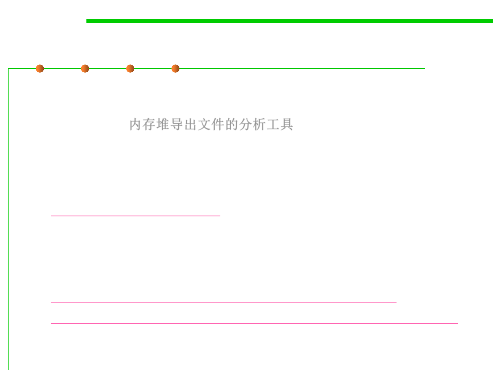

8.2 Dynamic Program Analysis Methods and Tools
Memory Analyzer (MAT)
▪ The Eclipse Memory Analyzer is a fast and feature-rich Java heap
analyzer that helps you find memory leaks and reduce memory
consumption. 内存堆导出文件的分析工具
– Use the Memory Analyzer to analyze productive heap dumps with
hundreds of millions of objects, quickly calculate the retained sizes of
objects, see who is preventing the Garbage Collector from collecting
objects, run a report to automatically extract leak suspects.
– http://www.eclipse.org/mat/
– MAT can run in stand-alone manner or run as a plug-in of Eclipse.
▪ Learn how to use MAT in your program profiling
– https://wiki.eclipse.org/MemoryAnalyzer/Learning_Material
– http://www.vogella.com/tutorials/EclipseMemoryAnalyzer/article.html